Creación Detallada de Capas (Feature Classes)
Diferencia Importante
Las capas no se crean desde el panel de Contents. Para crear una capa nueva, debes usar el panel de Catalog (a la derecha).
Proceso Paso a Paso
1
Acceso a la Geodatabase
En el panel Catalog, expande Databases, haz clic derecho en tu .gdb y selecciona New > Feature Class.

Menú contextual para crear una nueva clase de entidad.
2
Definición de Identidad
Establece el Name (sin espacios) y el Alias. Selecciona el tipo de geometría (Punto, Línea o Polígono).

Configuración inicial del asistente.
3
Configuración de Campos (Fields)
Define las columnas de tu base de datos. Agrega campos como "Estado", "Material" o "Fecha".

Definición de nombres de campo y tipos de datos.
4
Sistema de Coordenadas
Busca y selecciona el sistema de coordenadas oficial para garantizar la precisión geográfica.
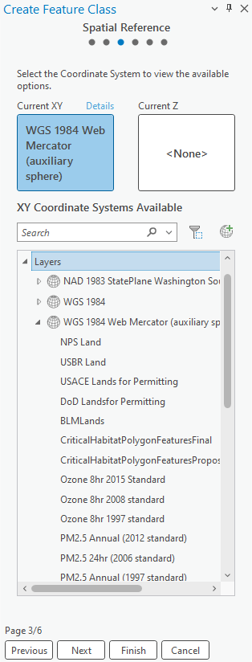
Selección del Sistema de Referencia Espacial.
Dibujo y Edición de Capas
Flujo de trabajo estándar para la creación de elementos geográficos.
I. INICIO DE LA EDICIÓN
Para comenzar a dibujar, primero debemos localizar las herramientas en la cinta superior. A diferencia de otros softwares, aquí la edición está integrada en el flujo constante.
1
Dirígete a la pestaña Edit y busca el grupo Features.
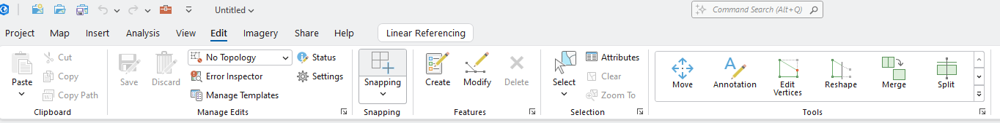
II. SELECCIÓN DE PLANTILLAS (TEMPLATES)
Al presionar el botón Create, aparecerá un panel a la derecha. Este panel muestra todas las capas editables de tu mapa.
2
Selecciona la capa en la que deseas trabajar para ver sus herramientas de dibujo.

III. HERRAMIENTAS DE CONSTRUCCIÓN
Una vez seleccionada la capa, aparecerá una barra flotante en el mapa o debajo del panel de creación con métodos de dibujo específicos.
Métodos Comunes:
- • Line: Clic por cada vértice.
- • Streaming: Dibuja mientras mueves el mouse.
- • Rectangle/Circle: Formas geométricas exactas.
Atajo Pro: Presiona la tecla F2 para terminar un dibujo (Finish Sketch) sin necesidad de hacer doble clic.

IV. AJUSTE (SNAPPING) Y FINALIZACIÓN
Para asegurar la conectividad entre cables y postes, el Snapping debe estar activo. Esto hace que el puntero se "pegue" a los elementos existentes.

CIERRE CRÍTICO
Al terminar de dibujar, es obligatorio presionar el botón Save del grupo Manage Edits. Si guardas el proyecto (.aprx) pero no guardas la edición de las capas, los dibujos se perderán.
Crear Shapefiles
Aprende a usar la herramienta para convertir tu base de datos en archivos Shape (.shp).
PASO 1: En el panel de Geoprocessing, escribe rápido "geodata" para buscar la herramienta.
Contents
Drawing Order
Fiber Cable
Slack Loop
Splice Case
Vista de Mapa Activa
Geoprocessing
Crear Shapefiles
Conversion Tools
Geodatabase To Shape
Parameters
Environments
Exportando capas...
¡Éxito!
Estructura de Salida (.shp)
Al finalizar el proceso, un "Shapefile" se compone de varias extensiones que deben permanecer juntas:
archivo.shp
Geometría de los datos.
archivo.dbf
Tabla de atributos.
archivo.shx
Índice de la geometría.
archivo.prj
Sistema de Coordenadas.
Pro-tip: Comprime todos estos archivos en un único archivo .ZIP para compartirlos.
Dominios y Atributos
Control de Calidad de Datos
Los dominios evitan errores de escritura manual, forzando al usuario a seleccionar valores de una lista predefinida por la empresa.
Ruta de acceso rápido:
Para configurar o ver los dominios asociados a una capa específica:
Clic derecho sobre la Capa > Data Design > Domains
Referencia: Clic Derecho en Capa
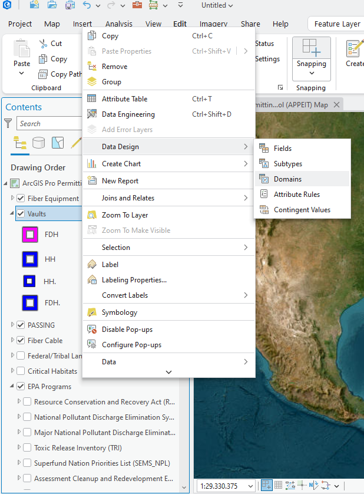
Paso 2: Configuración de la Tabla
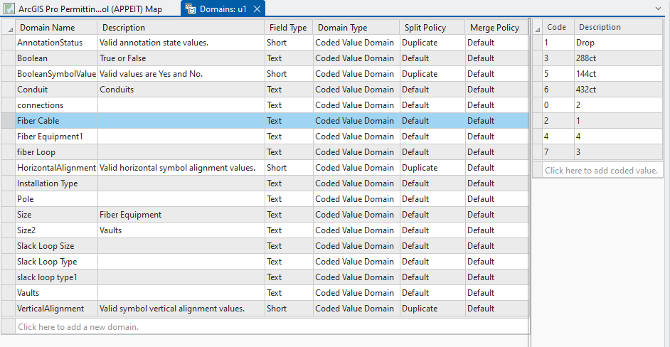
Insertar Captura de Ventana de Dominios
Muestra la relación entre el nombre del dominio a la izquierda y sus códigos/descripciones a la derecha.
1. Configuración
Crea el nombre del dominio y define los códigos (valor real) y descripciones (lo que ve el usuario).
2. Asignación
Ve a Data Design > Fields y en la columna "Domain" selecciona la lista que acabas de crear.
Recuerda siempre presionar el botón Save en la parte superior después de realizar cambios en los dominios o campos.
2. Tabla de Atributos (Información Alfanumérica)
Cada elemento dibujado en el mapa (punto, línea o polígono) tiene una fila correspondiente en la base de datos donde se almacena su información.
¿Cómo abrir la tabla?
Clic derecho sobre la capa en el panel Contents > Attribute Table (o presiona Ctrl + T).
Componentes de la Tabla:
-
Campos (Fields): Son las columnas. Representan categorías como TIPO_CABLE, ESTADO o LONGITUD.
-
Registros (Records): Son las filas. Cada fila es un objeto real en el mapa.
-
Vínculo con Dominios: Si un campo tiene un dominio asignado, al hacer clic en la celda verás una lista desplegable en lugar de poder escribir cualquier texto.
Vista de la Tabla
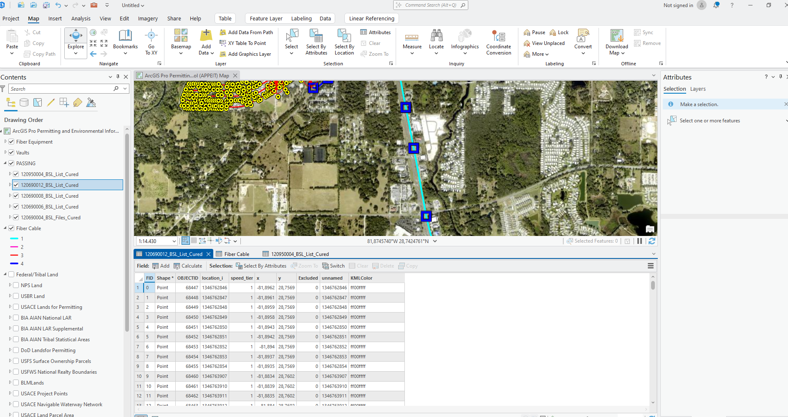
Referencia visual de Atributos
¡AVISO CRÍTICO DE SEGURIDAD DE DATOS!
Una vez terminado de configurar o asignar los dominios, es obligatorio presionar el botón Save en la parte superior. Esta sección es de suma importancia para la integridad de la base de datos GIS; por favor, verifica doblemente los códigos para evitar equivocaciones que puedan afectar el análisis posterior.
Exportar Mapas a PDF/Imagen
Paso a Paso: Exportación a KMZ
Instrucciones detalladas para convertir su proyecto de ArcGIS Pro a formato KML/KMZ.
I. ACCESO A HERRAMIENTAS
Para iniciar la exportación, primero debemos abrir el panel de geoprocesamiento:
1
Haga clic en la pestaña superior Analysis.
2
Seleccione el botón Tools para mostrar las herramientas.
Interfaz: Pestaña Analysis y Herramientas

II. BUSCAR LA HERRAMIENTA
3
En el panel de Geoprocessing, escriba "Map to KML" en el buscador y elija la herramienta.
Buscador: Geoprocessing
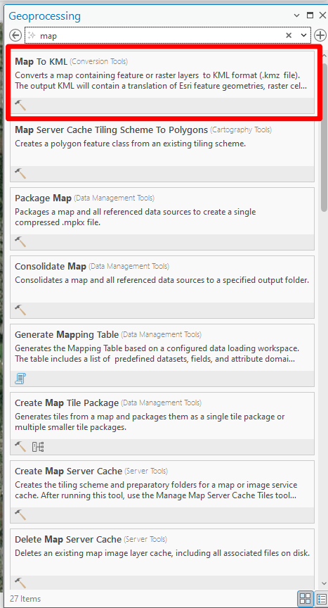
III. PARÁMETROS DE SALIDA
- Input Map: Seleccione el mapa actual que desea exportar.
- Output File (KMZ): Especifique la carpeta de destino y el nombre del archivo.
Panel: Configuración Map to KML

IV. FINALIZAR PROCESO
4
Presione Run para ejecutar la conversión.
Empaquetado de Proyectos
Cómo consolidar mapas y datos en un solo archivo para entrega o respaldo.
I. ACCESO A LA HERRAMIENTA
El archivo .mpkx (Map Package) es un contenedor comprimido que incluye las capas, los datos (GDB/Shapefiles) y la simbología. Es la forma segura de compartir proyectos sin romper los vínculos de datos.
1
Ve a la pestaña superior Share y en el grupo Package haz clic en Map Package.
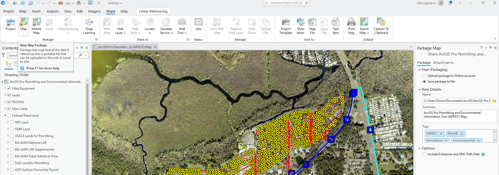
II. CONFIGURACIÓN DEL PAQUETE
En el panel que aparece a la derecha, debes definir dónde se guardará el archivo y completar los metadatos básicos (obligatorios por ArcGIS).
- Package to file: Selecciona esta opción para guardarlo en tu computadora.
- Summary & Tags: Escribe una breve descripción y etiquetas (ej: "Entrega_Proyecto").

III. ANÁLISIS DE CONSISTENCIA
Antes de generar el paquete, el sistema debe verificar que no falte ninguna fuente de datos.
2
Haz clic en el botón Analyze en la parte superior del panel.
Nota: Si aparecen errores rojos, debes corregir las rutas de las capas antes de continuar.

IV. EMPAQUETADO FINAL
Una vez que el análisis no devuelva errores, el botón de empaquetado se habilitará.
3
Presiona el botón Package para generar el archivo .mpkx.
¿Qué obtengo?
Obtendrás un único archivo que puedes enviar por correo. Al abrirlo, el destinatario verá exactamente lo mismo que tú, incluyendo los colores de las líneas y los iconos, sin errores de "capas rotas".
ArcGIS Pro APPEIT (Reportes PDF)
¿Qué es esta herramienta?
APPEIT es una herramienta creada por la NTIA que funciona dentro de ArcGIS Pro. Su propósito es identificar si tu proyecto de banda ancha cruza zonas protegidas o áreas ambientales antes de la construcción.
Descarga e Instalación
-
Descarga el archivo
.ppkxdesde el enlace oficial de la NTIA. - Guárdalo en tu disco local (evita OneDrive o Google Drive para mejor rendimiento).
- En ArcGIS Pro, busca el panel Catalog > Tasks y haz doble clic en APPEIT User Instructions.

Panel de bienvenida de la tarea.
Uso de la Herramienta Paso a Paso
1
Carga de Proyecto
Inicia la tarea y selecciona tu archivo (línea de cable o polígono de área). Haz clic en Run.
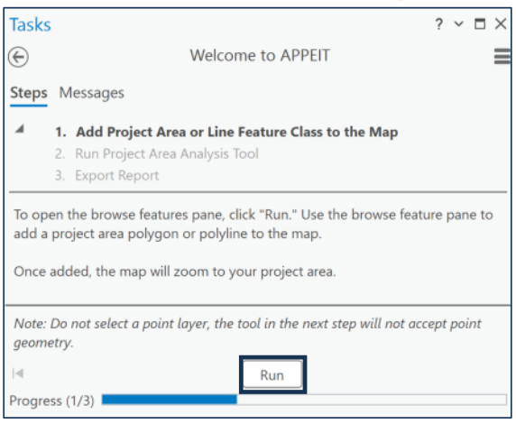
2
Parámetros e Identidad
Ingresa el Project ID. Si es una línea, define el Buffer.

3
Análisis y Resultados CSV
Ejecuta el análisis. Al finalizar, te mostrará la ruta de guardado del CSV.
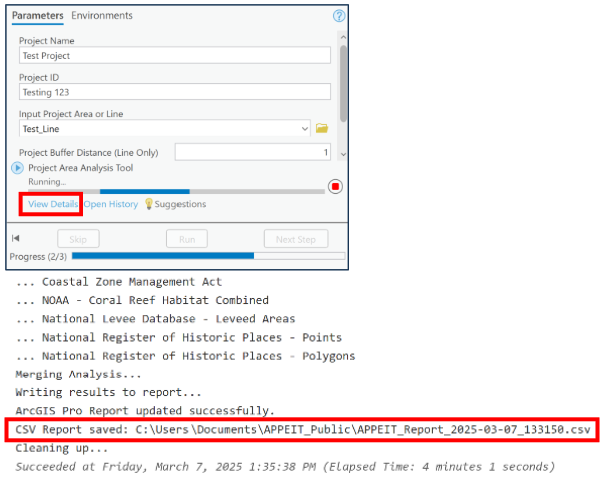
4
Generar Reporte PDF
Selecciona el reporte en "Input Report" y presiona Run.
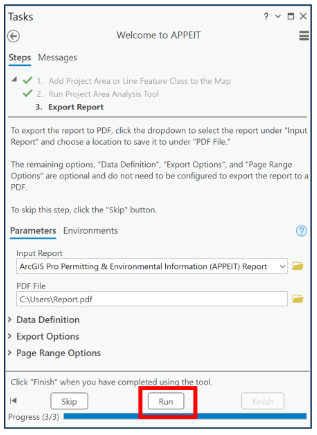
¿Qué contiene el reporte final?
El documento PDF resultante es un informe detallado que consolida todos los hallazgos geográficos y ambientales. Se divide principalmente en tres secciones:

Página 1
Identificación del Proyecto
Contiene el logo de la NTIA, el nombre oficial del reporte, el Nombre e ID del proyecto analizado y las fechas exactas de ejecución y exportación.
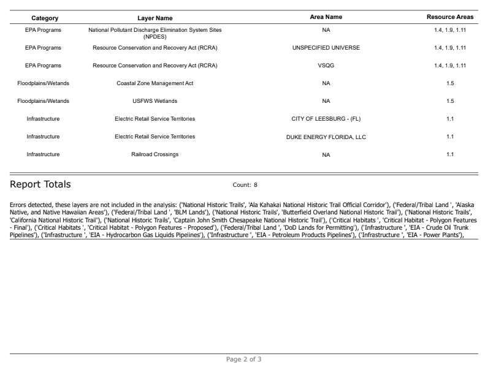
Página 2
Tabla de Hallazgos
Muestra el listado de capas afectadas organizadas por categorías (EPA, Infraestructura, Humedales). Detalla el nombre del área y los códigos de Recursos relacionados.

Página 3
Recursos y Mitigación (BMP)
Proporciona enlaces directos a las Mejores Prácticas de Gestión (BMP) para cada área de recurso afectada (Ej: Recursos Biológicos, Calidad del Aire, Salud Humana).